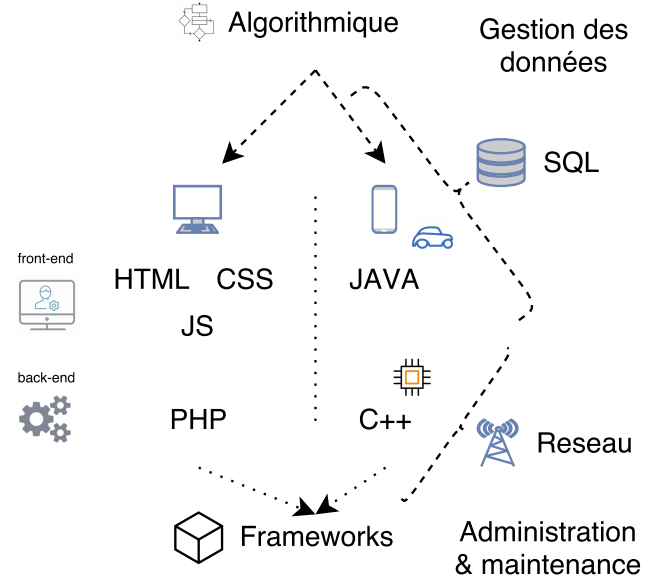

L'ensemble des concepts de bases par langage sont abordés, mais également les notions avancées de ces derniers qui pas-à-pas, vous permettront d'être autonome, une fois la tournure d'esprit du développeur acquise, et de réaliser par la suite des projets concrets.
Commencez par vous rendre à la rubrique IDE pour mettre en place votre environnement de développement ainsi qu'un hébergement web (serveur distant) pour effectuer vos tests.
Des étapes pas-a-pas avec copies d'écran vous sont fournies afin de vous aider à mettre en place un environnement universel.
HTML > Langage de description, non de programmation. Décrit à travers des balises dans les pages web. Très simple et structuré, à travers le normes W3C. Pour aller plus loin travailler sur le DOM et XML.
CSS > Langage de description permettant la mise en forme visuelle (couleurs, positionnement, taille, format...)des pages web.
JS (Javascript) Langage de programmation s'executant coté client, non serveur permettant l'animation des pages web. JS + PHP = AJAX.
PHP > Sites web modernes. Architecture Modèle (SQL bases de données) Contrôleur (Noyaux central des interractions et des évenements) Vues (Design)
Langage interprété (requêtes client envoyées vers serveur, le serveur génére et renvoi le code généré au client).
JAVA > Applications Android, Interfaces embarquées (Consoles des voitures, drones..), Applications web d'entreprise (Java coté serveur JEE)
Langage pré-compilé (Création d'un code machine intermédiaire nommé : Bytecode, identique quelque soit l'OS).
C++ > Successeur du langage C avec intégration de l'orienté objet. Jeux vidéos, traitement d'image, télécommunication, ingénierie poussée, applications financières.
Successeur de C (procédural). Applications iphone en objective-C ou swift.
Langage compilé (Temps de réponse faibles, haute performance, haute fiabilité, faible consommation d’énergie).
SQL > Langage de construction, et administration des bases de données. Univers très vaste à la fois simple et complexe.
La modélisation (Modèle de conception de données) est assurée par l'outil JMERISE.
Il n'y a pas d'ordre formel : tout dépend de la finalité recherchée. Quel langage pour quoi faire ? peut vous donner une idée en fonction de ce que vous recherchez.
Il est peut être conseillé d'appréhender les notions dans cet ordre :

Vous rencontrerez bon nombre de difficultés et de concepts abstraits, mais il ne faut pas se décourager. En suivant bien les cours, des notions d'abords floues et auxquelles vous ne décelez d'abord aucune utilité vous sembleront de plus en plus concrètes. Et vous y verez petit à petit une application concrète de ces dernières face à un problème. Puis en prenant de la hauteur et du recul, vous y verrez même ou chaque chose peut s'articuler dans un projet global, c'est un des points les plus passionnant (modélisation et écriture).
Ordre d'appréhention des notions
Front-end : Utilisation du framework Pure CSS sous licence BSD.
Back-end : Ce site à été conçu en orienté objet avec le design pattern MVC (Modèle-Vue-Contrôleur) appliqué au langage PHP.